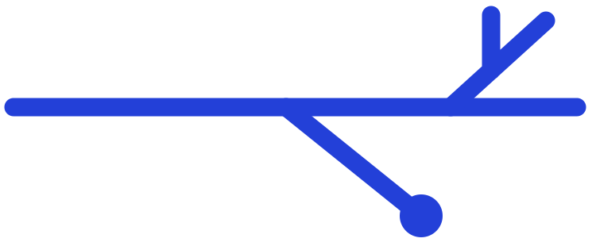

Review the change. Keep the judgment.
Diffowl gives every eligible pull request an evidence-backed first pass your team can inspect, run, and control.
Diffowl gives every eligible pull request an evidence-backed first pass your team can inspect, run, and control.
Generation, challenge, and verification are separate roles, so confident language never counts as proof by itself.

A clean result means Diffowl found no material problems in what it was allowed to check. It is not proof the change is correct, and it is not an approval.
What Diffowl does and does not do Open source on GitHub
Open source on GitHub